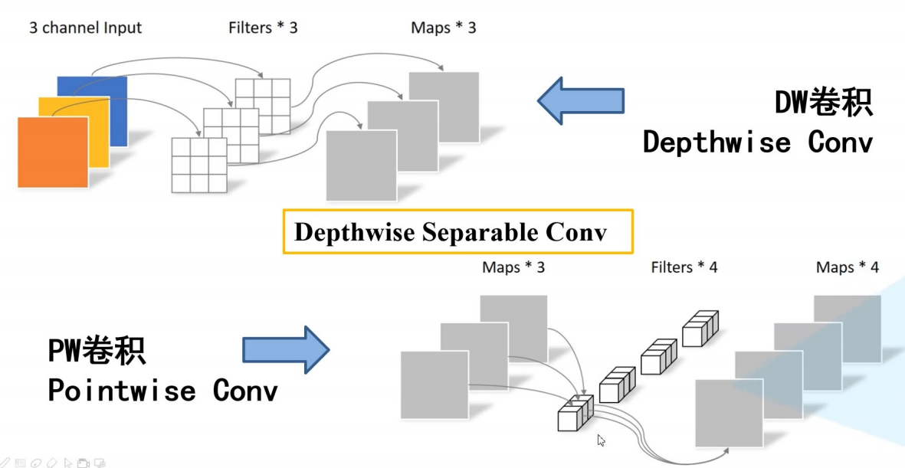
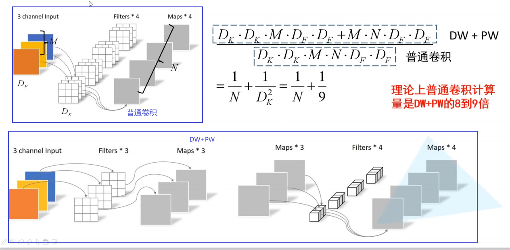
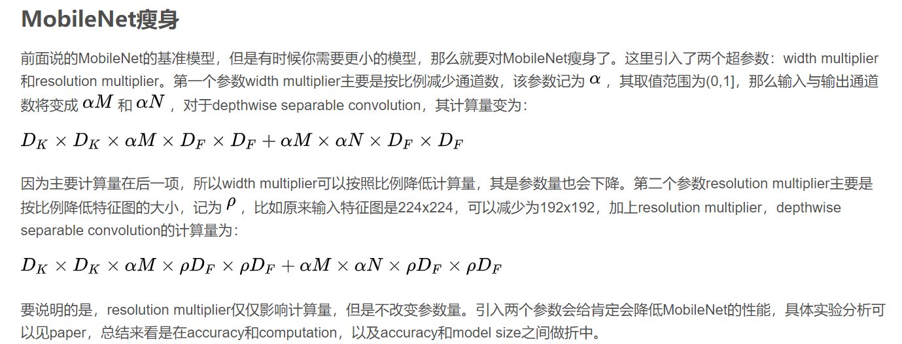
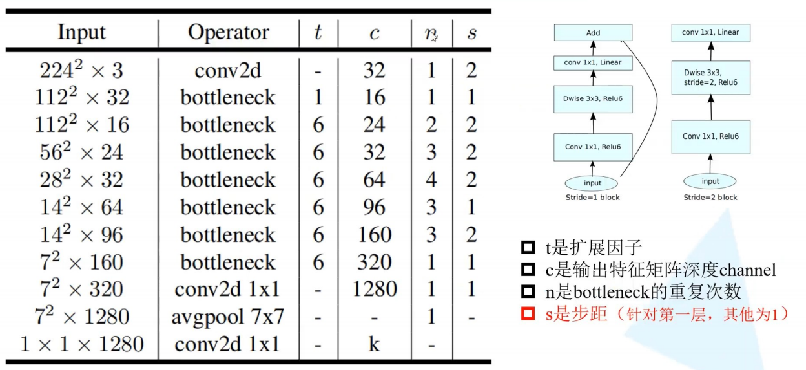

MobileNet网络
MobileNet V1
Depthwise separable convolution(深度可分离卷积)
MobileNet的基本单元是深度可分离卷积（depthwise separable convolution），其可以分解为两个更小的操作：depthwise convolution和pointwise convolution。
- depthwise convolution和标准卷积不同，对于标准卷积其卷积核是用在所有的输入通道上（input channels），而depthwise convolution针对每个输入通道采用不同的卷积核，就是说一个卷积核对应一个输入通道，所以说depthwise convolution是depth级别的操作。
- pointwise convolution其实就是普通的卷积，只不过其采用1x1的卷积核。


前面讲述了depthwise separable convolution，这是MobileNet的基本组件，但是在真正应用中会加入batchnorm，并使用ReLU激活函数，所以depthwise separable convolution的基本结构如图所示。

MobileNetV1遗留的问题
- 结构问题：MobileNet V1 的结构其实非常简单，论文里是一个非常复古的直筒结构，类似于VGG一样。这种结构的性价比其实不高，后续一系列的 ResNet, DenseNet 等结构已经证明通过复用图像特征，使用 Concat/Eltwise+ 等操作进行融合，能极大提升网络的性价比。
- Depthwise Convolution的潜在问题：Depthwise Conv确实是大大降低了计算量，而且N×N Depthwise +1×1PointWise的结构在性能上也能接近N×N Conv。在实际使用的时候，我们发现Depthwise部分的kernel比较容易训废掉：训练完之后发现Depthwise训出来的kernel有不少是空的。当时我们认为，Depthwise每个kernel dim相对于普通Conv要小得多，过小的kernel_dim, 加上ReLU的激活影响下，使得神经元输出很容易变为0，所以就学废了。ReLU对于0的输出的梯度为0，所以一旦陷入0输出，就没法恢复了。我们还发现，这个问题在定点化低精度训练的时候会进一步放大。
MobileNet V2
创新点
倒残差结构（Inverted Residual Block）：
先用1x1降通道过ReLU，再3x3空间卷积过ReLU，再用1x1卷积过ReLU恢复通道，并和输入相加。之所以要1x1卷积降通道，是为了减少计算量，不然中间的3x3空间卷积计算量太大。所以Residual block是沙漏形，两边宽中间窄。
但是，现在我们中间的3x3卷积变为了Depthwise的了，计算量很少了，所以通道可以多一点，效果更好，所以通过1x1卷积先提升通道数，再Depthwise的3x3空间卷积，再用1x1卷积降低维度。两端的通道数都很小，所以1x1卷积升通道或降通道计算量都并不大，而中间通道数虽然多，但是Depthwise 的卷积计算量也不大。作者称之为Inverted Residual Block，两边窄中间宽，像柳叶，较小的计算量得到较好的性能。
Relu6激活函数
MobileNet V1 里面使用 ReLU6，ReLU6 就是普通的ReLU但是限制最大输出值为 6，这是为了在移动端设备 float16/int8 的低精度的时候，也能有很好的数值分辨率。MobileNet V2最后输出的 ReLU6 去掉，直接线性输出，理由是：ReLU 变换后保留非0区域对应于一个线性变换，仅当输入低维时ReLU 能保留所有完整信息。
